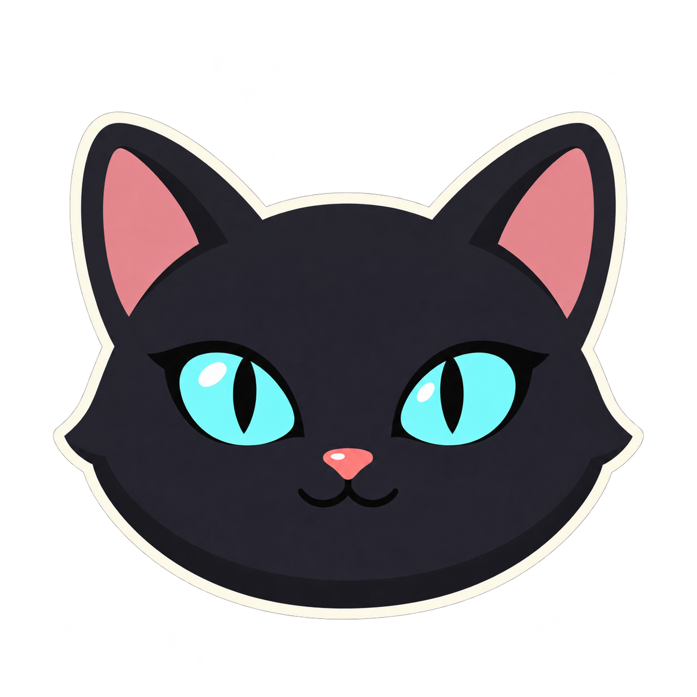

<!doctype html><html lang="zh-CN"><meta charset="utf-8"><title>Lucyna · 猫猫图标</title>
<style>
*{box-sizing:border-box}body{margin:0;padding:36px 44px;font-family:'Microsoft YaHei',sans-serif;background:#f6f7fa;color:#17263f}header{display:flex;align-items:center;gap:26px;margin-bottom:32px}header img{width:128px;height:128px}h1{font-size:28px;margin:0 0 12px}p{font-size:14px;margin:0;color:#536581}main{display:grid;grid-template-columns:1fr 1fr;gap:24px}.surface{padding:28px;background:#fff;border-radius:16px}.dark{background:#112341;color:#edf3ff}.surface h2{margin:0;font-size:16px;font-weight:600}.sizes{height:130px;display:flex;align-items:end;gap:24px}.sample{display:flex;flex-direction:column;align-items:center;gap:14px}.sample span{font-size:12px;color:#536581}.dark .sample span{color:#bed0eb}footer{margin-top:28px;display:flex;gap:28px;align-items:center}footer p{font-size:13px}img{display:block} .mini{display:flex;align-items:center;gap:10px}
</style>
<header><div><h1>Lucyna</h1><p>黑猫、青色眼睛、粉色鼻尖。只保留猫猫。</p></div></header>
<main><section class="surface"><h2>浅色背景</h2><div class="sizes">
<div class="sample"><span>16 px</span></div><div class="sample"><span>20 px</span></div><div class="sample"><span>24 px</span></div><div class="sample"><span>32 px</span></div><div class="sample"><span>48 px</span></div><div class="sample"><span>64 px</span></div>
</div></section><section class="surface dark"><h2>深色背景</h2><div class="sizes">
<div class="sample"><span>16 px</span></div><div class="sample"><span>20 px</span></div><div class="sample"><span>24 px</span></div><div class="sample"><span>32 px</span></div><div class="sample"><span>48 px</span></div><div class="sample"><span>64 px</span></div>
</div></section></main><footer><div class="mini"><strong>Lucyna</strong></div><p>侧栏 · 任务栏 · 托盘 · 窗口图标</p></footer></html>
